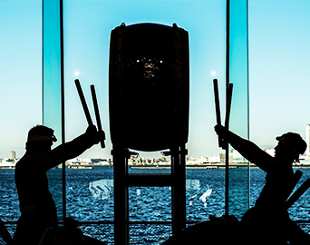
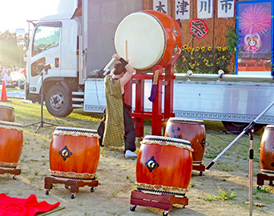

初めての方へ
和太鼓の音色を響かせて
ココロもカラダもリフレッシュ！
SWSの特徴
-
●SWS独自のレッスン
和太鼓未経験者の方でもすぐに楽しんでいただけるようにプログラムしています。
各自のレベルに合わせたクラスを設定しており、どなたでも体を思い切り動かして楽しく演奏できるレッスンづくりを心がけております。 -
●いつでもストレス解消できる環境
和太鼓を演奏していると脳内にアルファ波が発生し、脳の血流が活性化するという研究データがあります。防音スタジオでのびのび楽しめる環境をお客様に提供することを約束致します。
SWSが選ばれる3つの理由
-
1 あなたの人生に健康としあわせを
関根和太鼓教室は、あなたの健康と幸せをプラスします。和太鼓を思い切り叩いて、日頃のストレスを発散させましょう！きっと、心身共に健康で幸せな生活があなたを待っています。
詳細はこちら -

2 プロ和太鼓奏者が基礎から伝授！
未経験の方でも始めやすいように、経験豊富な和太鼓講師が、あなたに合わせて全力でサポートします。基礎から上級者向けの打ち方まで、様々な技術にチャレンジできます！
詳細はこちら -

3 楽しいだけでなくダイエットにも！
和太鼓の演奏は、ほぼスポーツといっても過言ではありません。お客様の中には20㎏も減量に成功した方もいます。
詳細はこちら
お腹まわりはもちろん、二の腕や下半身などの気になる所もスッキリ！
よくある質問
-
Q1 私にもできますか？
和太鼓は叩けば音は必ず出る楽器です。また、小さいお子様から80年代以上の方まで幅広く楽しむことができます。
正しいフォームやいい音の出し方、リズムや技術など、講師の先生がしっかりと指導してくれます！ -
Q2 和太鼓初心者なのですが、大丈夫ですか？
SWS会員の95%以上が、これまで和太鼓に触れたことがなかった初心者の方達です。
40年間培ってきた指導カリキュラムで、初心者の方でも安心して楽しく上達していけるようにサポートさせていただくので心配不要です！ -
Q3 楽譜が読めないのですが、それでも問題ありませんか？
問題ありません！和太鼓はリズムを覚えれば誰でも曲を演奏できるようになるので、誰にでも挑戦しやすい楽器です！
リズム感に自信がない方でも、自然と覚えていけるようになります！ -
Q4 体験レッスンに参加したいのですが、有料ですか？
無料です！お気軽にご参加ください！体験レッスンのぺージからすぐにご応募できます！